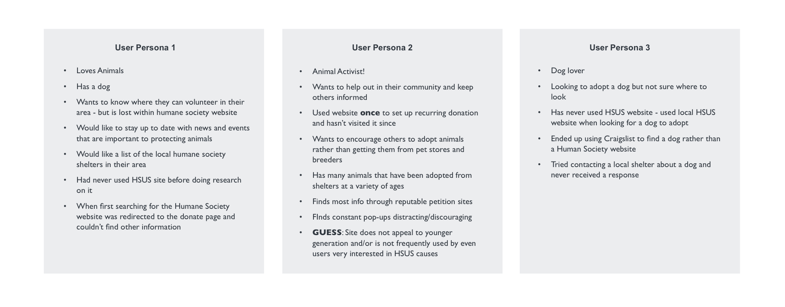
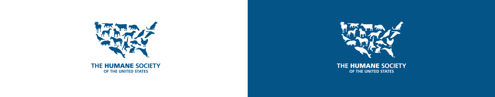
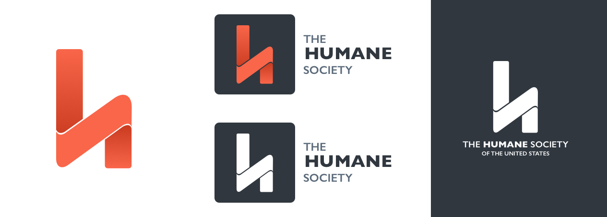
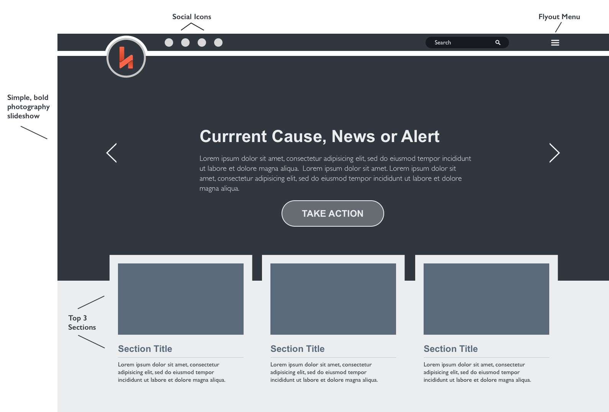
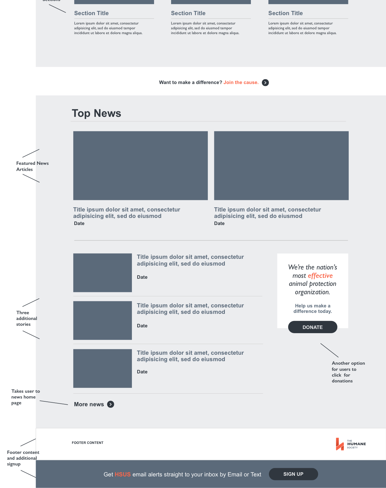
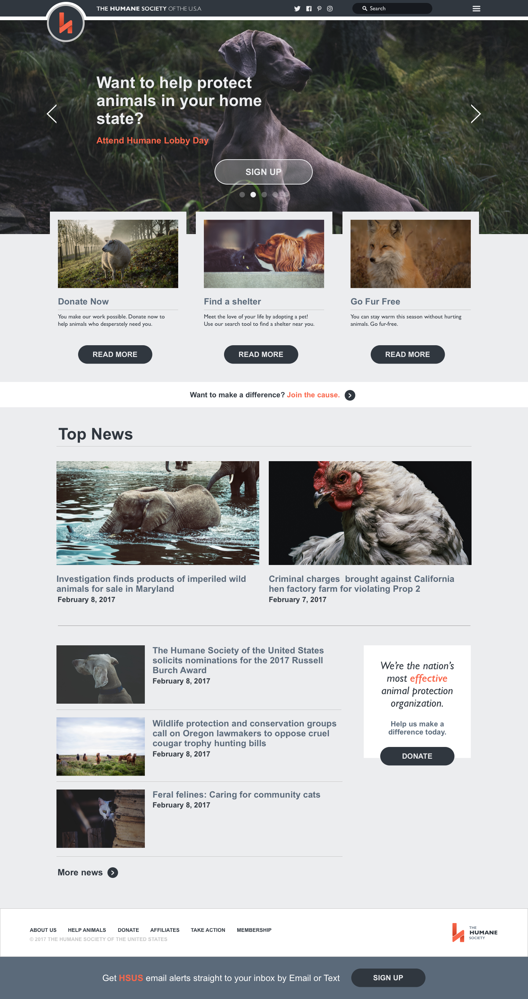
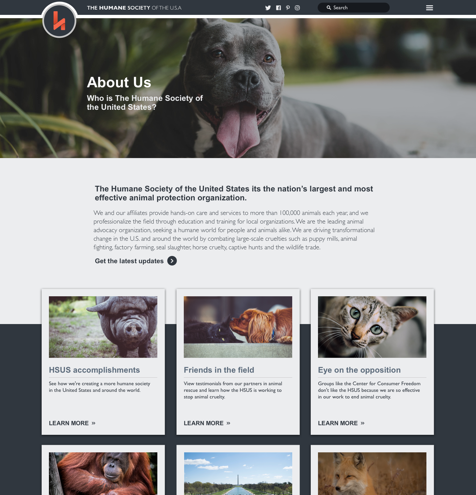
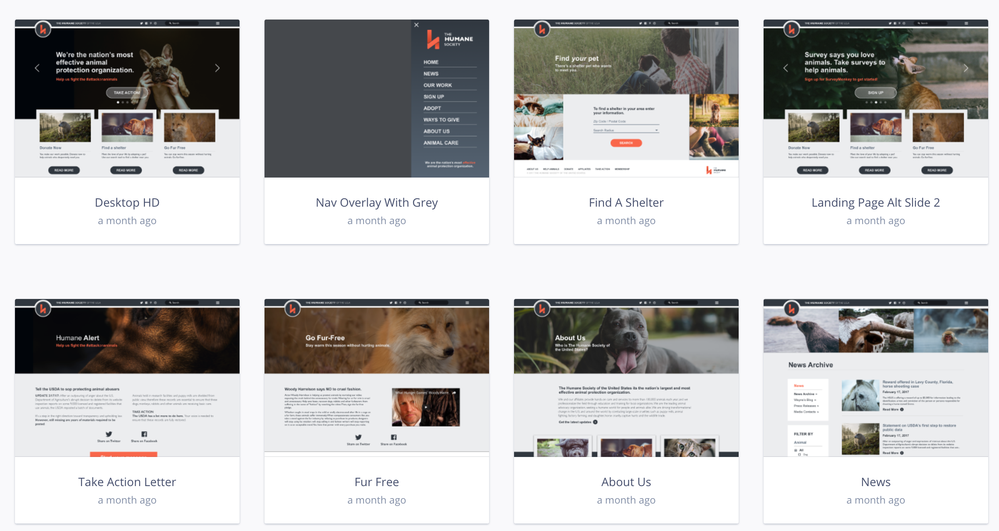

Part of improving your skills is making something to get your feet wet. For this project I didn't have a long term goal other than to make something I thought looked pretty snazzy for an organiztion I respected. So, I decided to tackle the partial redesign of the Humane Society website. While I firmly believe in The Humane Society's cause, I felt their website distracted more than it added to the conversation and was difficult to navigate.
Part of the reason I was drawn to this project was my own efforts to peruse The Humane Society website. I was so overwhelmed with links, photos, and pop-ups it didn't make for a very pleasing experience. What WAS apparent is that the primary goal of the website is receiving donations. I counted four separate places to find out more about donating just above the fold on the landing page, and that doesn't include a pop-up that appears mere seconds after landing on the page. While it is important for visitors to find donation information, they shouldn't be bombarded with this information everytime they visit the site.
The site as a whole is rich in content, but all that content is competing for space. Rather than finding this helpful, as a user it was overwhelming to see links to so many pages, especially when those links weren't always located in the same place on the page.
Which leads me to my next point, often pages throughout the site didn't seem to fit into the same aesthetic as others. It was like they had been designed at different times or by different people and never updated to match. I wanted to give the website a cleaner more cohesive feel that enhanced user experience and kept them coming back for more.
One of my close friends is a passionate and involved animal advocate so I asked her about her experience on the website. She said she had visited it once to make a recurring donation and never revisted, and found the constant pop-ups distracting. She would rather use a different website to find out about current animal issues and petitions.
This hit the website's issue right on the head. Humanesociety.org is well-equipped for receiving donations, but the rest of their content is not appealing to my friend - their ideal target audience - who has used the site ONE TIME! Several user personas created as I began the redesign process. I wanted to make sure to take a human centered design approach to this website.
With this redesign I sought to target some of the main issues I experienced with the website in order to improve user experience and keep animal lovers coming back for more. They included:
At the end of this project my goal was to have given the site a design lift, cleaning up the Humane Society's message into a layout that was not overwhelming and text heavy, but largely photo driven.
The original Humane Society landing page on the left. You can see the four different places to click to find out more about donating circled in red. The original news page on the right seemed to match the home page layout the closest with a consitent sidebar navigation.When building a project from the ground up, I like to start with a logo and color palette. I felt that the Humane Society's current logo clearly communicates a love of animals, but is otherwise busy and not web-friendly for use on different devices. I find that most people know what the Humane Society does so I felt a cleaner, simpler logo would suit their needs just as well. A more minimal logo also allows for easy resizing on smaller devices and horizontal and vertical orientations.
I wanted the color palette to be slightly more muted than the current one, really letting the photos of animals shine through. Rather than a primary (red, yellow and blue) color scheme, I opted for dark blues and greys with a single pop of color.
  Top: The Humane Society's current logo. While the design clearly communicates the organizations role in the lives of animals it becomes hard to read and cluttered on small screen sizes. Bottom: My new logo for The Humane Society in several variations. I think it simplifies the brand to one clean, identifiable icon. Additionally, the H icon can be isolated or paired with text, making it more versitile for the web and at both landscape and portrait orientations.Now that I had an idea of my main goals for this project, and I had some basic design elements taken care of, it was time to start on some simple wireframes. For the purpose of this write-up I'm going to focus primarily on the home page. I wanted to divide this page into multiple sections that were well separated and easy for the user to navigate. I searched the web for some inspiration and drew bits and pieces from several sites that relied heavily on photos to communicate their message to users.
 Initially medium-fidelity wireframe for the home page. You can see the slideshow and top 3 sections taking shape at this point in the process.Another main focus on the home page was the news section. I gave it a redesign that matched the feel of top section - large photos with straightforward accompanying text.
 In this wireframe you can see the layout of not only the news section, but also another option for donating. I felt like adding this in was consistent with the main goal of the original website without detracting from the design or overwhelming the user.The next step in the process was adding content. For this I took content directly from The Humane Society website to give a realistic feel to the mockup pages. I wasn't thrilled with the images from the original website so instead I used high-resolution photos from Unsplash to achieve my goal of simple, bold photos to make an impression on users.
At this point I also fleshed out the design a bit more, adding icons for social media, content to the footer, slideshow circle icons, etc. I think the biggest advantage to this home page layout is the focus on several main sections rather than trying to cram too much content into one small space. If users want to explore more, other options are available to them in the navbar or footer, but the most important content is what catches the user's eye first.
Each page had it's own problems to tackle. After coming up with the overall feel of the landing page I had a jumping off point for how I wanted the other pages to look. As I said earlier, this website is rich in content and I didn't want to redesign every single page on the site. So I focused on the ones that I felt were necessary for the final prototype and were unique in some way. For example, I only redesigned one news story page rather than the hundreds on the real website. Below are several of the redesigned pages.
The final step was pulling everything into InVision and creating a protype to give a feel for how the site would function. This step was a lot of fun because everything came together into one cohesive final product. I think the biggest challenge at this stage was creating a slideshow feel in the prototype. I ended up timing 4 different pages to transition between each other on the landing page. This made the navigation a bit jumpy when opened on the landing page, but it gave the illusion of a slideshow which I liked.
 Several of the screens brought into the InVision prototpye.The Humane Society website is HUGE, and I only scratched the surface of what a complete overhaul/redesign would look like. That being said, whether or not you agree with the way I approached the redesign, it is clear that there are some outdated and underperforming elements with their current design. The big three in my opinion:
Take a look at the InVision prototype!